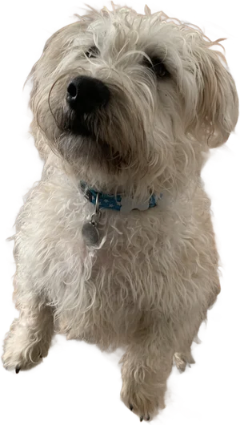

Meagan
Swenson
25+ years building websites and web applications, from the user interface to the database, including seven at Philips and Albert Heijn. Main stack: Oracle/PL-SQL, PHP/Laravel, React and HTML/CSS/JavaScript, now with AI-assisted and agentic development in Claude Code.
Where the climb started
Profile
Full-stack developer with 25+ years of experience building websites and web applications, from the user interface to the database. Seven of those years at Philips and Albert Heijn in the Netherlands.
Main stack: Oracle/PL-SQL, PHP/Laravel, React, HTML/CSS/JavaScript. Since 2026 I work with AI-assisted and agentic development using Claude Code and GitHub Copilot.

Off the clock: Originally from Madison, Wisconsin, now settled in Amsterdam with my partner, my dog George Bailey, and my cat Pippi Longstocking (he refuses to pose for photos). I'm happiest building new things, on-screen or in the kitchen, and I make time for a good stand-up special and a properly brewed cup of coffee.
Education
Certifications
What I bring to a team
In their words
“Meagan is a consummate professional, and an incredible asset for any team. She's as comfortable tracking the small details as she is helping guide a project toward the big-picture priorities: smart, responsible, articulate, and proactive, all with good humor and a genuine desire to see everyone succeed.”
“Meagan has an exceptional grasp of technical complexity and a rare ability to make it clear for non-technical stakeholders. An excellent listener and collaborator, always happy to share her expertise. I particularly admired her willingness to challenge the status quo with innovative solutions.”
Like what you see? Let's talk.
Based in Amsterdam and open to new opportunities.
Email meCallLinkedInDownload CV